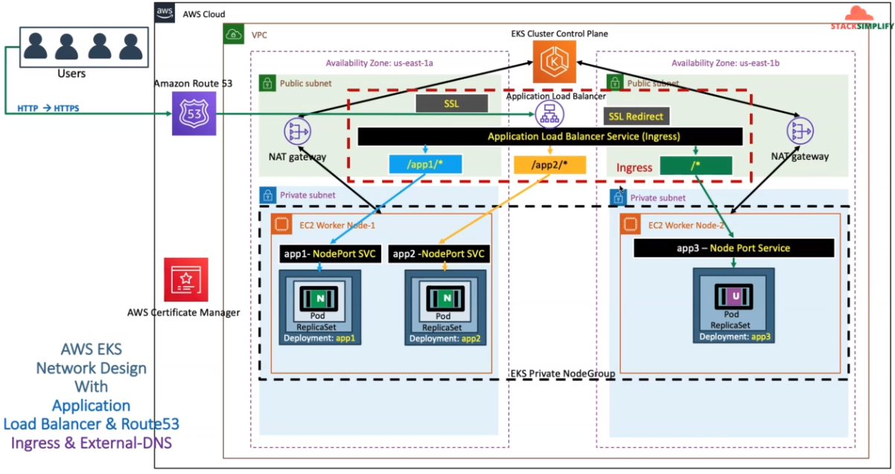

3 external dns controller
External DNS Controller

Create IAM Policy
This IAM policy will allow external-dns pod to add, remove DNS entries (Record Sets in a Hosted Zone) in AWS Route53 service.
aws iam create-policy \
--policy-name AllowExternalDNSUpdates \
--policy-document file://manifest/external-dns-controller/policy.json
# Output
{
"Policy": {
"PolicyName": "AllowExternalDNSUpdates",
"PermissionsBoundaryUsageCount": 0,
"CreateDate": "2023-01-23T07:01:51Z",
"AttachmentCount": 0,
"IsAttachable": true,
"PolicyId": "ANPAXE26SPP73NVLC4PWY",
"DefaultVersionId": "v1",
"Path": "/",
"Arn": "arn:aws:iam::491435228159:policy/AllowExternalDNSUpdates",
"UpdateDate": "2023-01-23T07:01:51Z"
}
}
Create IAM Role, k8s Service Account & Associate IAM Policy
- As part of this step, we are going to create a k8s Service Account named external-dns and also a AWS IAM role and associate them by annotating role ARN in Service Account.
- In addition, we are also going to associate the AWS IAM Policy AllowExternalDNSUpdates to the newly created AWS IAM Role.
eksctl create iamserviceaccount \
--name external-dns \
--role-name=IngressExternalDNSRole \
--namespace default \
--cluster app-cluster \
--attach-policy-arn arn:aws:iam::491435228159:policy/AllowExternalDNSUpdates \
--approve \
--override-existing-serviceaccounts
# Output
2023-01-23 15:04:44 [ℹ] 1 existing iamserviceaccount(s) (kube-system/aws-load-balancer-controller) will be excluded
2023-01-23 15:04:44 [ℹ] 1 iamserviceaccount (default/external-dns) was included (based on the include/exclude rules)
2023-01-23 15:04:44 [!] metadata of serviceaccounts that exist in Kubernetes will be updated, as --override-existing-serviceaccounts was set
2023-01-23 15:04:44 [ℹ] 1 task: {
2 sequential sub-tasks: {
create IAM role for serviceaccount "default/external-dns",
create serviceaccount "default/external-dns",
} }2023-01-23 15:04:44 [ℹ] building iamserviceaccount stack "eksctl-app-cluster-addon-iamserviceaccount-default-external-dns"
2023-01-23 15:04:44 [ℹ] deploying stack "eksctl-app-cluster-addon-iamserviceaccount-default-external-dns"
2023-01-23 15:04:44 [ℹ] waiting for CloudFormation stack "eksctl-app-cluster-addon-iamserviceaccount-default-external-dns"
2023-01-23 15:05:14 [ℹ] waiting for CloudFormation stack "eksctl-app-cluster-addon-iamserviceaccount-default-external-dns"
2023-01-23 15:06:05 [ℹ] waiting for CloudFormation stack "eksctl-app-cluster-addon-iamserviceaccount-default-external-dns"
2023-01-23 15:06:05 [ℹ] created serviceaccount "default/external-dns"
# Output
NAMESPACE NAME ROLE ARN
default external-dns arn:aws:iam::491435228159:role/IngressExternalDNSRole
kube-system aws-load-balancer-controller arn:aws:iam::491435228159:role/AWSLoadBalancerControllerIAMRole
Deploy External DNS Controller
- Update External DNS Kubernetes manifest
File Location:
manifest/external-dns/controller.yaml
Change the ff: - The created Service Account IAM role on the previous step since we don't want to override it once we run the manifest file.
# Line 9
eks.amazonaws.com/role-arn: arn:aws:iam::491435228159:role/AWSLoadBalancerControllerIAMRole
# Commented line 55 & 56
#annotations:
#iam.amazonaws.com/role: arn:aws:iam::ACCOUNT-ID:role/IAM-SERVICE-ROLE-NAME
# Commented line 65 & 67
# - --domain-filter=external-dns-test.my-org.com # will make ExternalDNS see only the hosted zones matching provided domain, omit to process all available hosted zones
# - --policy=upsert-only # would prevent ExternalDNS from deleting any records, omit to enable full synchronization
spec:
serviceAccountName: external-dns
containers:
- name: external-dns
image: k8s.gcr.io/external-dns/external-dns:v0.13.2
serviceaccount/external-dns configured
clusterrole.rbac.authorization.k8s.io/external-dns created
clusterrolebinding.rbac.authorization.k8s.io/external-dns-viewer created
- To verify the external DNS creation, you can view the external-dns controller.
Clean Up
- External DNS Controller
- External DNS Service Account
- Delete IAM Policy. Don't forget to change AWS ACCOUNT ID:
491435228159.
References
- https://github.com/kubernetes-sigs/external-dns/blob/master/docs/tutorials/alb-ingress.md
- https://github.com/kubernetes-sigs/external-dns/blob/master/docs/tutorials/aws.md